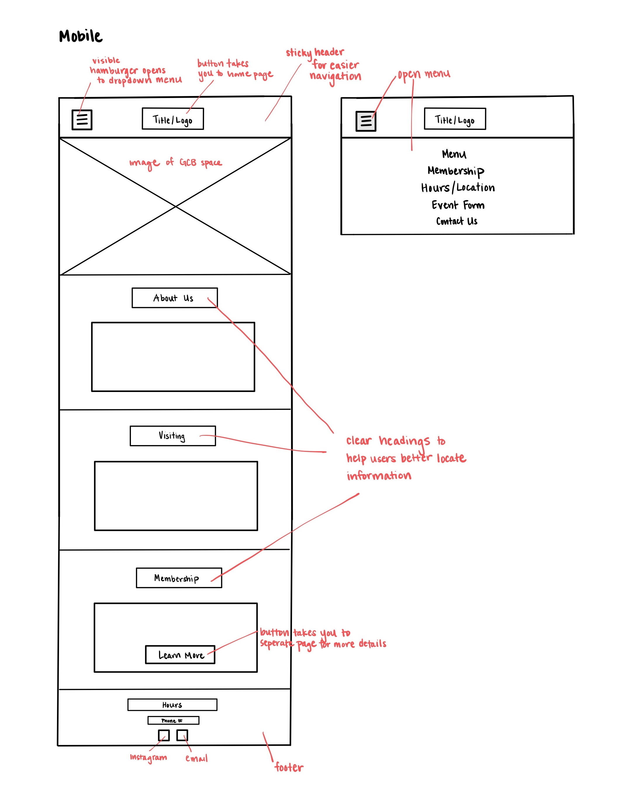
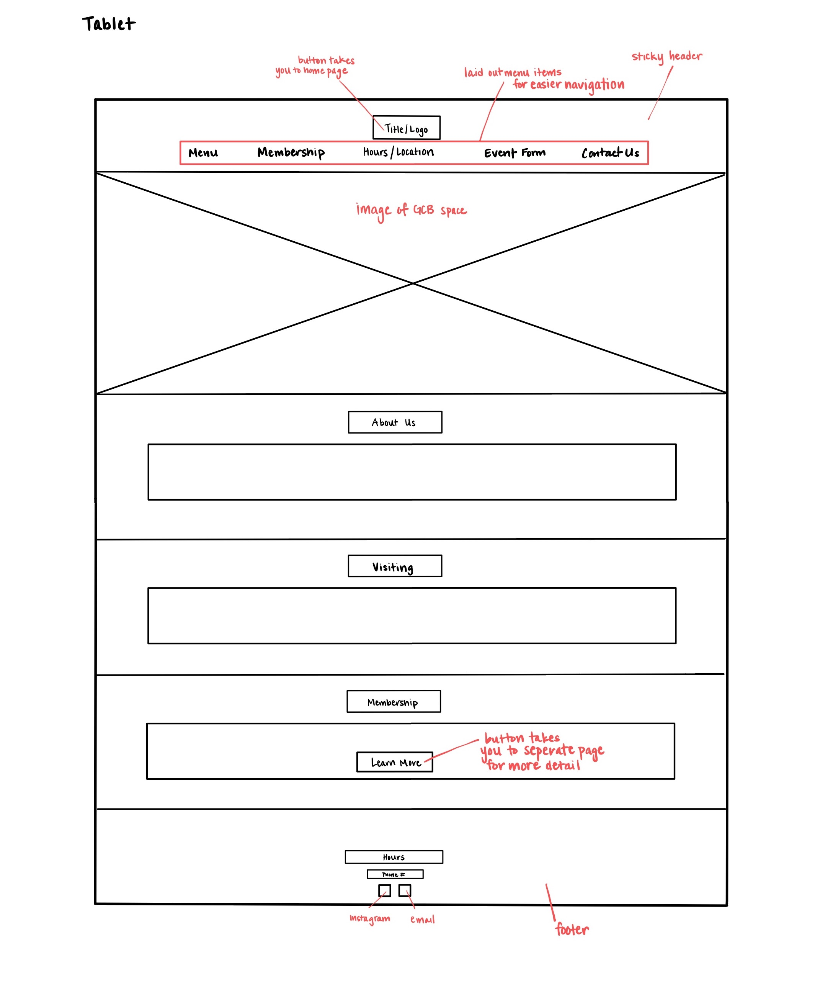
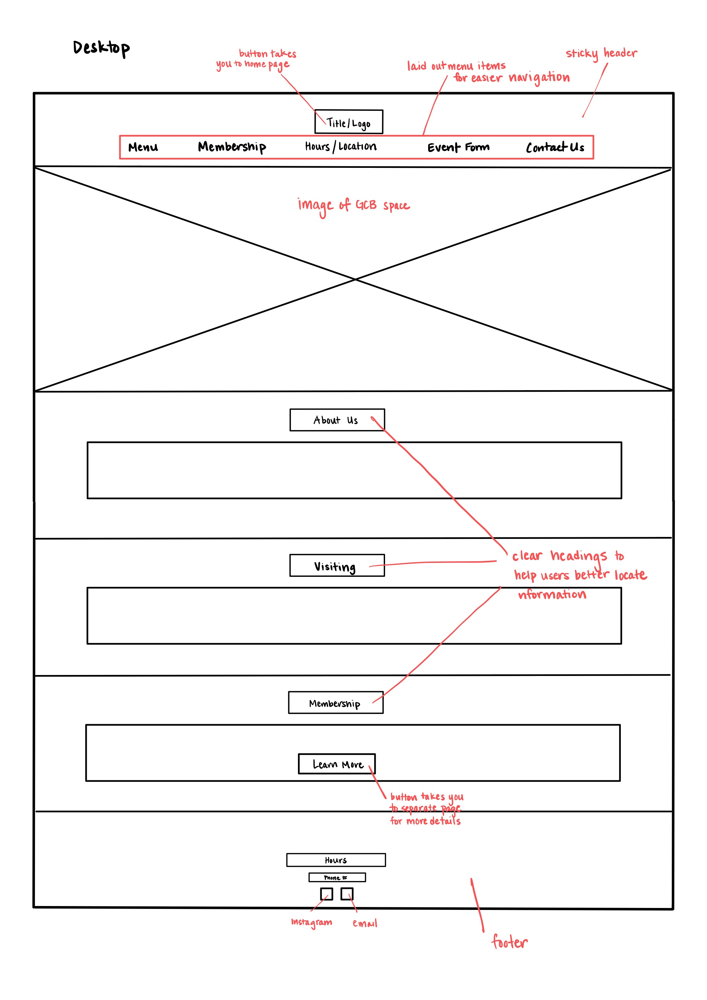

Grad Student Bar (GCB) Website


The Grad Center Bar (GCB) is an on-campus hub for 21+ students to spend time with friends,
play a few rounds of pool, and enjoy the ambiance of the eclectic space. I chose to redesign
their website because of its confusing and layout hard-to-read text, which makes it difficult to
locate information. By redesigning their website, users will be able to easily navigate the website to
find the information they are looking for.
The GCB website has many usability issues that hinder the ability of first-time and returning users to
navigate the website efficiently. Usability issues include:
Learnability:
- Information on the website is not structured in a logical way (e.g. displays large blocks of text on the home page), making it difficult for users to navigate
- Critical information about the establishment is hidden amongst the mass of text, which makes it hard to find
- In the mobile screen of the website, the menu dropdown button is the same color as the background, so users have no way to know where to click to open the menu
Memorability:
- While there are not that many components on the website, the lack of hierarchies within the text makes it difficult for users to recall where the information lies
- The lack of general organization of the website causes the user to search through the site numerous times until they find what they are looking for
Efficiency:
- Users can easily navigate to the Home and Event Form pages by using the navigation bar, but they cannot easily navigate anywhere else (i.e. establishment hours, location, menu)
- Due to the lack of headers and text hierarchy, it is still difficult for users to locate the information they are looking for
In addition to the general usability issues, the GCB website also has additional accessibility concerns. By running the website through WebAim WAVE, which is a software that
identifies potential accessibility concerns of a website, there were a few issues that were exposed:
- 8 very low contrast errors between the items on the page and the background
- Suspicious alternative text
- Possible heading
- Redundant link
- Very small text
- ARIA labels are not consistent across the page and do not adequately describe the function of the element
Based on the feedback above, the accessibility of GCB’s website can certainly be improved. For users who are visually impaired, the low contrast between the text and the background of the page is difficult to read, especially because the text itself is relatively small.
Additionally, the ARIA labels should be changed to be more descriptive and helpful to the user. This would allow software such as a screen reader to effectively communicate the setup and content of the page to the user.
After considering the usability concerns discussed above, I designed a low-fidelity prototype of the GCB website for a mobile device, a tablet, and a desktop.



I designed a high-fidelity prototype in Figma to mock up a version of the website for all three screen sizes. The prototype includes CSS annotations about margins, spacing, font type and size, and more.
Along with the prototype, I created a visual design style guide for the website that includes the color scheme, typography, and interactions with buttons and menu items.


Using the Figma prototypes, I implemented a redesign for the GCB website that is responsive to different screen sizes. The link can be found here.